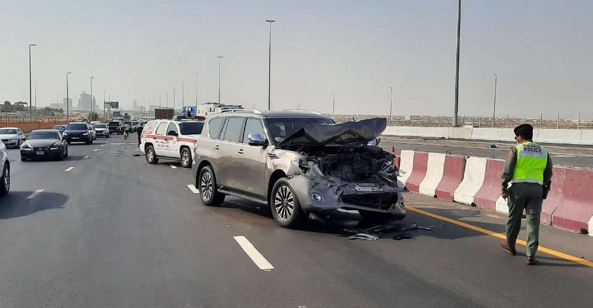

27th Feb, 2025 10:30AM
Al Qusais, Baghdad Street
Case Under Review
Medium
Wave 1 - 1 Police Officer, 2 Paramedics
8.5 minutes

| Issue | SLA Response Time Breach (170%) |
|---|---|
| Primary Contributing Factor | Severe congestion during peak-hour traffic in the Al Qusais area |
| Additional Factors to Investigate | Dispatch latency, resource availability, inter-team coordination |
| Recommendation | Conduct further investigation to identify all contributors to the delay |
| Staff | Start | End | Active (mins) | Travel (mins) | On-Scene (mins) |
|---|---|---|---|---|---|
| Patrol Officer 1 | 10:30 | 11:00 | 30 | 12 | 18 |
| Paramedic 1 | 10:31 | 11:05 | 34 | 8.5 | 25.5 |
| Paramedic 2 | 10:31 | 11:08 | 37 | 8.5 | 28.5 |